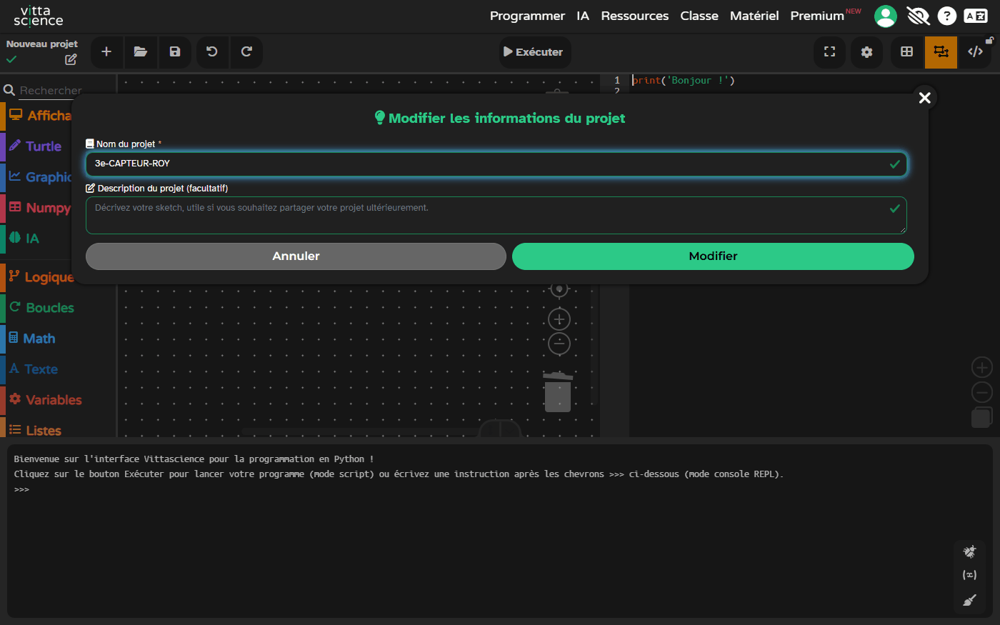
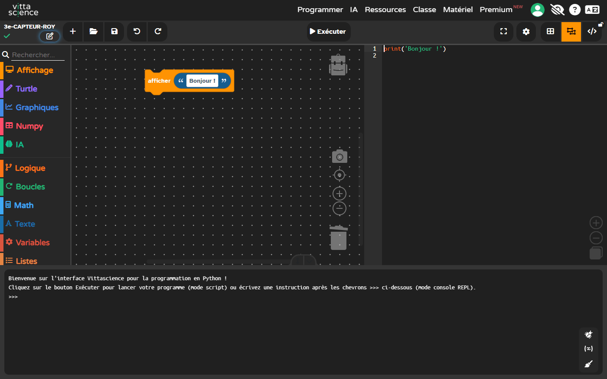
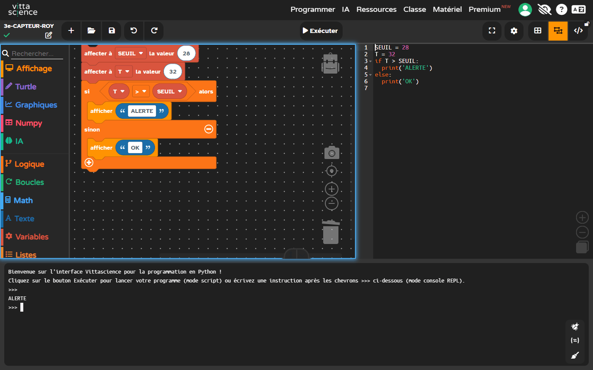
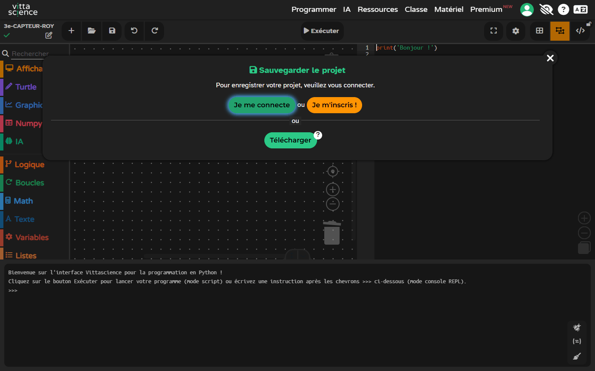
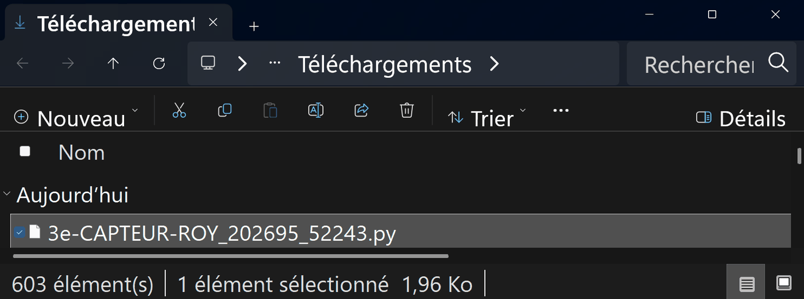
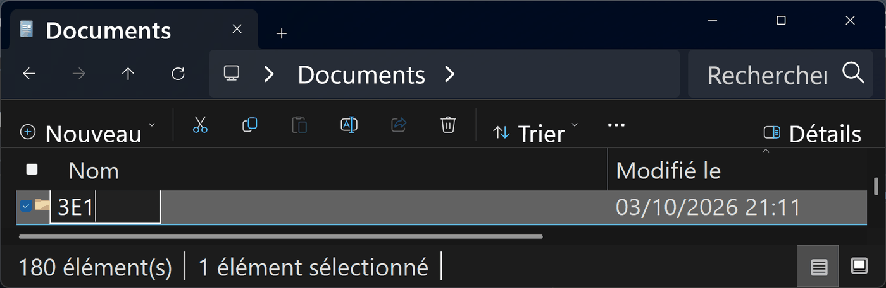
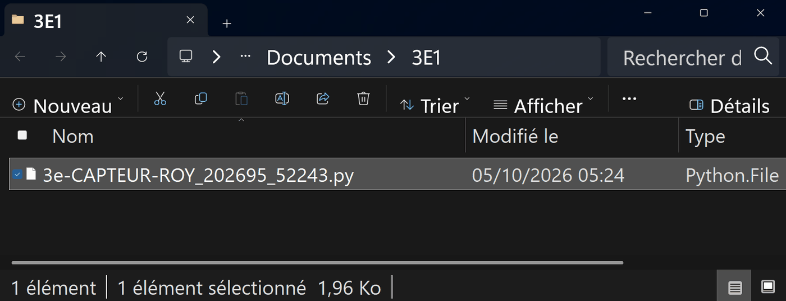

En 5e, tu as imaginé puis validé une solution pour l'indicateur du hall. En 4e, sur le jardin, tu as comparé des matériaux, tu as tracé la démarche de projet en diagramme de flux, et tu as organisé les tâches qu'on te donnait.
Cette année, ce qui change : personne ne te donne la liste. Une infirmière dit qu'il fait trop chaud en salle 214, l'emploi du temps dit le contraire, et c'est ta mesure qui tranchera. Tu vas élaborer le processus complet — découper, estimer, tenir une date — sur un problème dont on ignore la réponse.
Tu arrives cette année ? Retiens qu'un projet technique commence toujours par une question qu'on ne sait pas trancher autrement qu'en mesurant.
Concevoir et valider une solution pour signaler la surchauffe d'une salle (îlot de chaleur urbain)
3eThème 3 — Création, conception, réalisation, innovations : des objets à concevoir et à réaliser3e_C7.1 · 3e_C7.2 · 3e_C8.1New YorkCRCN
🔀 Mon parcours :
Parcours affiché : tous.
Le mode essentiel masque le référentiel, les corrections et les compléments : il ne reste que les consignes et les exercices.
Ma progression : 0 / 8 activités validées
🎯 Ce que dit le programme
Code
Je serai capable de…
Où, dans cette séquence
3e_C7.1
Élaborer un processus de conception et de réalisation dans une durée, avec des tâches identifiées.
Séance 1, activité 1 (concevoir, sans planning fourni)
3e_C7.2
Proposer et fabriquer un ensemble de solutions pour produire un nouvel OST (croquis, schéma, graphique, algorithme, modélisation).
Séance 3, activités 6 (contrôler un FAST) et 7 (proposer par des croquis, choisir la représentation)
3e_C8.1
Mettre en œuvre une simulation pour valider la tenue mécanique d'un matériau.
Séance 1, activité 0 (simulateur thermique) et activité 2
Le verbe de 3e est « élaborer » : personne ne te donne le processus, tu l'écris. En 5e on te le fournissait et tu le suivais ; en 4e tu l'organisais à partir de tâches données. Ici, la page blanche est le sujet.
🎫 Billet d'entrée — trois questions, sans note
Cette séquence s'appuie sur ce que tu as fait en 4e — concevoir un support, puis le valider par des tests. Elles ne comptent pas dans ta progression et ne sont pas notées — « je ne sais pas encore » est une réponse utile.
🔀 Deux façons de vivre la séquence
🅱 En simulation : le simulateur thermique de l'activité 0 fonctionne dans la page, hors connexion, et sert de banc d'essai pour tous les cas — y compris ceux qu'on ne peut pas provoquer en classe. C'est le parcours principal.
🅲 Sur papier : croquis, tableau d'essais et algorigramme au cahier — mêmes questions, mêmes validations.
Aucun parcours ne retire de question. Le sélecteur en haut de page masque seulement
ce qui ne te concerne pas ; tout ce qui est évalué reste demandé à tout le monde.
🗺 Où j'en suis — les 8 activités de cette séquence, en trois séances
Chaque activité validée se colore ici. Rien ne se perd si tu t'arrêtes en route.
3 séances de 55 min sur cette page — 145 min d'activités annoncées (la fabrication du boîtier se poursuit au TP « Le boîtier étanche », et l'atelier de planification prend une séance de plus)
Séances
Séance 1 : activités 0, 1 et 2, soit 55 min · Séance 2 : activité 3 et REFAIRE, soit 45 min · Séance 3 : activités 6 et 7, puis le bilan, soit 45 min
New York — collège en zone d'îlot de chaleur (rooftop / cour asphaltée)
🔁 Le contrat de la séquence
FAIRE pour comprendre : tu commences par MANIPULER le simulateur thermique (activité 0) — avant toute définition.
COMPRENDRE : chaque geste débouche sur un « À retenir » qui NOMME le concept (seuil, protocole, hystérésis…).
REFAIRE pour comprendre encore : tu réinvestis le concept sur un NOUVEAU cas (l'humidité du local archives) — même squelette, autre habit.
📖 Situation déclenchante
Mardi 12 juin, quinze heures. Salle 214, dernier étage, façade sud. Le thermomètre du
couloir affiche 32 °C. Dans la salle, la moitié de la classe a la tête sur la table. Le
professeur a ouvert les fenêtres, mais elles donnent sur l'avenue : on entend les klaxons, plus
le cours. Il les referme. On étouffe à nouveau.
Ce n'est pas une impression : trois salles de cet étage passent au-dessus de 30 °C
presque tous les après-midi de juin, et deux autres restent à 24. L'administration le sait
vaguement — personne n'a jamais rien mesuré. Mme Reyes, l'infirmière, résume :
« On me les envoie avec mal à la tête et je ne peux rien dire d'utile, parce que je n'ai aucun
chiffre. Si je pouvais montrer quelles salles chauffent et à quelle heure, on
déplacerait les cours de l'après-midi. Là, c'est ma parole contre l'emploi du temps. »
Voilà ce que tu vas construire : un petit boîtier posé dans chaque salle, avec un voyant
qu'on voit depuis la porte. Vert tant qu'on peut travailler. Rouge quand la salle a dépassé le
seuil. Et il garde en mémoire l'heure à laquelle il est passé au rouge, pour qu'on puisse le
montrer.
Le mot du métier, c'est capteur de confort thermique. On
en pose dans les bureaux, les crèches et les trains — partout où une température discutée vaut moins
qu'une température mesurée.
❓ Problématique
Comment concevoir et valider une solution technique qui signale le dépassement d'un seuil de température dans une salle scolaire exposée à l'îlot de chaleur urbain ?
🎯 CRCN mobilisés
CRCN 3.4 — Programmer · Niveau 2 (visé) / Niveau 3 (extension)
Repère
Réaliser un programme simple · Mettre au point et exécuter un programme simple commandant un système numérique (repères CRCN / PIX)
Action observable
L'élève ordonne l'algorigramme, écrit l'algorithme SI température > seuil ALORS alerte, le confronte à 4 scénarios chiffrés, corrige au moins un écart
Insérer, saisir et trier des données dans un tableur / tableau pour les exploiter
Action observable
L'élève saisit 4 mesures (T °C, seuil, décision) et justifie la validation ou le rejet
Trace
Tableau de protocole de test complété dans la séquence (sauvegardé localement)
CRCN 5.1 — Résoudre des problèmes techniques · Niveau 2
Repère
Résoudre des problèmes empêchant l'accès à un service numérique usuel / dysfonctionnement simple
Action observable
Face à un scénario « LED éteinte alors que T > seuil », l'élève propose une cause probable et un test discriminant
Trace
Fiche diagnostic (cause hypothétique + test + résultat) dans l'activité 3
« Utiliser un ordinateur » n'est pas une compétence CRCN. Ici chaque compétence a une action et une trace.
💡 Hypothèse de départ
🪜 Version étayée — des phrases à compléter
Le niveau attendu est exactement le même qu'avec la consigne libre : ces débuts
de phrases retirent l'obstacle de la rédaction, pas l'exigence.
Je pense qu'il faut alerter à partir de ____ °C.
Parce que ____ .
Ce qui pourrait rendre ce seuil mauvais : ____ .
💾 Sauvegarde automatique dans la page, à chaque modification.
🗓 Séance 1 — Faire, concevoir, valider
Durée : 55 minutes · activités 0, 1 et 2.
La question de la séance : à partir de quelle température faut-il alerter, et comment prouver que la solution choisie alerte au bon moment ?
🖐️ Activité 0 — FAIRE d'abord : le simulateur thermique ⏱ ~10 min
Consigne : AVANT toute définition, fais varier la température de la salle avec le curseur. Observe la LED d'alerte. Franchis le seuil dans les deux sens (monter PUIS redescendre).
Température de la salle : 24 °C
LED d'alerte : éteinte
Le seuil est caché quelque part entre 25 et 30 °C… à toi de le trouver en manipulant.
Q1 — À partir de quelle température la LED s'allume-t-elle ?
Q2 — Quand tu REDESCENDS sous cette température, la LED…
📖 Correction complète (à ouvrir APRÈS ton essai)
La LED s'allume dès que T dépasse 28 °C (le seuil de confort retenu) et s'éteint dès qu'on repasse dessous. Ce que tu viens de FAIRE à la main, c'est exactement ce que le programme fera tout seul : comparer une mesure à un seuil.
À retenir (COMPRENDRE) : un seuil est la valeur qui sépare deux comportements (alerte / pas d'alerte). Tu l'as trouvé en manipulant — c'est le « faire pour comprendre ».
🔧 Activité 1 — Concevoir (C7) ⏱ ~20 min
👥 Qui fait quoi — et quand on échange
Deux rôles seulement, et on échange à la moitié du
temps. Un rôle est un tour, pas une étiquette.
Le pilote tient l'outil — le clavier, le capteur, le tableur. Il exécute ;
il ne décide pas seul.
Le vérificateur relit chaque nombre et chaque unité avant qu'on les écrive.
Il a le droit d'arrêter le groupe.
Si tu travailles à trois ou à quatre
Le scribe écrit la trace commune — et note aussi ce que le groupe n'a pas su faire.
Le porte-parole explique à la classe. Il ne parle qu'avec ce que le scribe a écrit :
si la trace ne suffit pas, c'est la trace qu'il faut reprendre.
Rôle
1re moitié
2e moitié
Pilote
Vérificateur
À recopier à chaque séance. Si personne ne change de rôle, c'est
toujours le même qui apprend à tenir le clavier — et ce n'est pas celui qui en avait le
plus besoin.
Besoin : alerter si T > 28 °C (seuil de confort trouvé au simulateur).
Propose deux solutions (matériel TBT — très basse tension uniquement — ou simulation) et choisis-en une avec 2 critères (coût, lisibilité, robustesse…).
🪜 Version étayée — des phrases à compléter
Le niveau attendu est exactement le même qu'avec la consigne libre : ces débuts
de phrases retirent l'obstacle de la rédaction, pas l'exigence.
Solution A : ____ . Solution B : ____ .
Elles diffèrent vraiment parce que ____ .
Je choisis ____ . Premier critère : ____ . Second critère : ____ .
📖 Correction complète
Exemples attendus : A — carte micro:bit + capteur T + LED (TBT, programmable, lisible) ; B — thermomètre à alcool + pastille couleur (sans énergie, mais personne ne surveille). Choix justifié par 2 critères EXPLICITES, par exemple : fiabilité de la lecture + alerte visible sans surveillance → solution A. Concevoir, ce n'est jamais une idée unique : c'est un choix argumenté entre plusieurs.
À retenir : concevoir = besoin → idées → choix justifié (pas une idée unique).
🧪 Activité 2 — Valider par des tests (C8) + CRCN 1.3 ⏱ ~25 min
Protocole minimal — trace CRCN 1.3. Pour chaque scénario, PRÉDIS le comportement attendu, puis VÉRIFIE-le au simulateur de l'activité 0 (règle le curseur sur la valeur du scénario) et note ce que tu observes.
Scénario
T (°C)
Ta prédiction
Observé au simulateur
Salle fraîche
22
Seuil exact
28
Surchauffe
32
Retour au frais
24
Décision globale :
📖 Correction complète
22 °C → OFF · 28 °C → OFF (la règle est « strictement supérieur à 28 » : à 28 exactement, pas d'alerte — c'est le scénario FRONTIÈRE, le plus précieux du banc) · 32 °C → ON · 24 °C → OFF. Comportement conforme au besoin → décision Validée. Tester = scénarios + attendu + observé, et TOUJOURS un cas frontière.
À retenir : sans résultat attendu écrit AVANT le test, on ne valide rien. Le cas frontière (T = seuil) est le plus important.
🗓 Séance 2 — L'algorigramme, puis le code
Durée : 55 minutes · les gestes de Vittascience, l'activité 3 et le REFAIRE.
La question de la séance : comment écrire la règle « alerter au-dessus du seuil » pour qu'une carte la suive toute seule, sans clignoter près du seuil ?
🧰 Avant de commencer (échauffement) — les quatre gestes de Vittascience
Quatre gestes à faire une fois, au début, et ta séance ne se perdra pas. Tu les as peut-être déjà faits une autre année : refais-les, c'est court. Et si tu ne les as jamais faits, tout est écrit ici.
Ouvrir. Clique sur le bouton ▶ Ouvrir l'éditeur Vittascience dans un nouvel onglet de l'activité 3 : l'éditeur Python s'ouvre dans un nouvel onglet, en mode mixte : des blocs à gauche, le Python à droite. Vittascience met déjà un exemple, le bloc « afficher Bonjour » et sa ligne Python : tu peux l'effacer avant de commencer.
Ce que tu dois voir : le bouton ▶ Ouvrir l'éditeur Vittascience…, dans le cadre de l'activité 3. Puis : clique-le ; garde cet onglet-ci ouvert pour lire la consigne.Comment savoir que c'est fait : les blocs à gauche, le Python à droite, la console en bas, et le nom « Nouveau projet » en haut à gauche. Le bloc « afficher Bonjour » est l'exemple que Vittascience pose dans tout projet neuf : tu peux l'effacer avant de commencer.
Nommer. Clique le crayon à côté du nom du projet, en haut à gauche, et remplace « Nouveau projet » par 3e-CAPTEUR-TON NOM. Un projet sans nom est introuvable la semaine suivante.

Ce que tu dois voir : la fenêtre « Modifier les informations du projet », avec ton nom dans « Nom du projet ». Puis : clique Modifier. ROY est un exemple : mets ton nom.

Comment savoir que c'est fait : ton nom apparaît en haut à gauche. C'est lui qui nommera ton fichier au geste 4.
Retrouver. La semaine suivante, ouvre ton fichier : clique le dossier (Ouvrir), l'onglet Depuis votre appareil, le bouton Ouvrir…, puis ton fichier .py dans Documents, dans le dossier de ta classe. Vittascience te demande de confirmer : clique Oui. Ton programme revient, en blocs et en Python, avec son nom.
Ce que tu dois voir : clique le dossier dans la barre d'outils, puis l'onglet Depuis votre appareil. Puis : clique Ouvrir… et choisis ton fichier .py, dans Documents, dans le dossier de ta classe. N'utilise pas « Mes projets sur le cloud » : tu n'es pas connecté.Ce que tu dois voir : Vittascience te demande de confirmer. Clique « Oui » : ce que tu avais déjà fait dans cet onglet est remplacé par ton fichier.

SEUIL alors » avec « afficher ALERTE », et « sinon » avec « afficher OK ». À droite, le code Python correspondant. La console, en bas, affiche ALERTE.">
Comment savoir que c'est fait : ton programme est revenu, en blocs et en Python, avec ton nom. Exécuter affiche dans la console ce qu'il affichait avant. Ce programme est un exemple : c'est le tien qui revient.
Sortir. Vittascience ne garde pas ton travail d'une séance à l'autre. Clique la disquette, puis Télécharger : un fichier .py au nom de ton projet arrive dans Téléchargements. Vittascience ajoute des chiffres à la fin du nom du fichier : c'est normal. Déplace-le dans Documents, dans le dossier de ta classe (exemple : 3E1). Si ce dossier n'existe pas encore, crée-le d'abord : dans Documents, Nouveau → Dossier, tape le nom de ta classe, puis valide.

Ce que tu dois voir : la fenêtre « Sauvegarder le projet », ouverte par la disquette. Ne te connecte pas et ne t'inscris pas : clique Télécharger, le bouton vert tout en bas.

Ce que tu dois voir : le fichier .py au nom de ton projet, dans Téléchargements — le navigateur l'y range sans rien demander. Clique-le une fois, puis Ctrl + X pour le couper. Les chiffres à la fin du nom sont ajoutés par Vittascience ; ROY est un exemple. La fenêtre est rétrécie pour ne montrer que ce fichier.Si le dossier de ta classe n'existe pas encore : dans Documents, clique Nouveau puis Dossier. Un dossier apparaît, son nom surligné : tu peux taper le tien. La fenêtre est rétrécie : tes autres dossiers ne sont pas montrés.

Ce que tu dois voir : le nom de ta classe à la place de « Nouveau dossier ». Puis : Entrée, double-clic sur le dossier pour y entrer, et Ctrl + V pour y coller ton fichier. 3E1 est un exemple : c'est le nom de ta classe.

Comment savoir que c'est fait : en haut, Documents › 3E1 ; dans la liste, ton fichier .py. Il n'est plus dans Téléchargements : il est rangé.
📐 Activité 3 — L'algorigramme, puis le code (CRCN 3.4) ⏱ ~30 min
🌐 Cette activité demande une connexion Internet — l'éditeur Vittascience est en ligne. Sans connexion : écris ton programme sur le cahier : la logique est ce qui compte, la saisie se fera à la séance suivante.
3a — Remets l'algorigramme en ordre (représentation schématique)
Le raisonnement que tu as FAIT à la main au simulateur se dessine. Numérote les blocs de 1 à 5 pour reconstruire l'algorigramme de l'alerte :
⬭ débutDÉBUT (au démarrage du capteur)
▭ traitementMesurer la température T de la salle
◇ décisionT > 28 ?
▭ action OUIOUI → allumer la LED d'alerte
▭ action NONNON → éteindre la LED, puis revenir à la mesure
📖 Correction bloc par bloc
1 — DÉBUT (ellipse : un algorigramme commence toujours par un terminal). 2 — Mesurer T (rectangle : un traitement — c'est l'ENTRÉE de la donnée). 3 — T > 28 ? (losange : une DÉCISION a toujours deux sorties, OUI et NON — jamais une seule). 4 — OUI → LED allumée (rectangle : la SORTIE côté alerte). 5 — NON → LED éteinte puis retour à la mesure (la flèche qui REMONTE fait la boucle : le capteur surveille en continu). Entrée → décision → sorties → boucle : les quatre familles de blocs y sont.
3b — Écris le pseudo-code, puis fais-le vivre en blocs ↔ Python
🧪 Code ton alerte dans l'onglet Vittascience — en blocs, puis lis le Python (et inversement)
Construis d'abord la décision en BLOCS (logique → si/sinon) et observe le Python s'écrire ; puis modifie directement le Python (change le seuil à 26) et regarde les blocs suivre. Dans le volet Python, change seulement ce que la consigne demande. Le reste, fais-le avec les blocs. Sans capteur réel : T = 32 et print("ALERTE") à la place de la LED. Les DEUX SENS comptent : blocs → texte, texte → blocs. Nomme ton projet 3e-CAPTEUR-TON NOM, puis télécharge-le (geste 4).
Vittascience n'accepte pas d'être affiché à l'intérieur d'une autre page : l'éditeur s'ouvre dans un onglet à part. Garde cet onglet-ci ouvert pour lire la consigne.
Bug possible : près de 28 °C, la LED clignote. Propose une correction (hystérésis ou seuil OFF différent) :
Diagnostic (CRCN 5.1) : LED éteinte alors que T = 33 °C. Cause probable + test discriminant :
🪜 Version étayée — des phrases à compléter
Le niveau attendu est exactement le même qu'avec la consigne libre : ces débuts
de phrases retirent l'obstacle de la rédaction, pas l'exigence.
Cause probable : ____ .
Mais ce pourrait aussi être ____ .
Test qui départage : ____ , et j'attends comme résultat ____ .
📖 Correction complète
seuil = 28
T = 32
if T > seuil:
print("ALERTE")
else:
print("ok")
Hystérésis : allumer si T > 29, éteindre si T < 27 — entre les deux on ne change rien, fini le clignotement (écart > bruit de mesure). Diagnostic : cause probable = capteur débranché ou seuil mal saisi ; test discriminant = afficher la valeur mesurée : si elle est absurde, c'est le capteur ; si elle est bonne, c'est la condition.
🎨 Lis le code en couleurs : variables · "textes" · nombres · mots-clés · = et opérateurs
À retenir : mettre au point = écart observé → hypothèse → test → correction → retest. L'algorigramme et le code disent LA MÊME CHOSE en deux langages.
🔄 REFAIRE — Réinvestissement ⏱ ~15 min
Adapte la même logique à un seuil d'humidité pour un local archives (éviter les moisissures : alerte si H > 60 %). 4 lignes de pseudo-code :
🪜 Version étayée — des phrases à compléter
Le niveau attendu est exactement le même qu'avec la consigne libre : ces débuts
de phrases retirent l'obstacle de la rédaction, pas l'exigence.
Grandeur mesurée : ____ , et son seuil : ____ .
SI ____ ALORS ____ .
SINON ____ .
Ce qu'il faudrait ajouter pour éviter le clignotement : ____ .
📖 Correction complète
SEUIL = 60
mesurer humidité → H
SI H > SEUIL ALORS
allumer LED alerte
SINON
éteindre LED
FIN SI
Ce que tu viens de refaire avec l'humidité, tu l'avais déjà fait avec la température — le concept commun s'appelle la comparaison à un seuil. Seule la grandeur mesurée change : c'est LA force d'une structure bien conçue.
À retenir (REFAIRE) : réinvestir un concept sur un nouveau cas, c'est la preuve qu'on l'a compris — et c'est comme ça qu'on le retient.
🗓 Séance 3 — Représenter les solutions
Durée : 55 minutes · activités 6 et 7, puis le bilan de la séquence.
La question de la séance : avant de fabriquer le boîtier, comment proposer plusieurs solutions, et les représenter pour qu'un autre puisse les relire, les brancher ou les imprimer ?
Les deux activités s'entraînent sur un autre objet, une station d'alerte cyclonique ; leurs deux « À retenir » ramènent à ton capteur ce qu'elles t'apprennent.
🧭 Activité 6 — Contrôler un FAST avant de fabriquer (C7.2) ⏱ ~13 min
Objectif : vérifier qu'un diagramme FAST tient debout avant de fabriquer ce qu'il décrit. Compétence : 3e_C7.2. Production : les trois erreurs repérées et leur correction, dans l'exercice ci-dessous.
Un FAST à contrôler : celui de la station d'alerte cyclonique
Ton capteur de confort et une station d'alerte cyclonique sont construits sur la même idée : mesurer une grandeur (la température de la salle, la vitesse du vent), la comparer à un seuil, puis prévenir quelqu'un (le voyant rouge vu depuis la porte, la sirène entendue dans le quartier). L'exercice porte sur la station, pas sur ton capteur : une équipe a écrit son diagramme FAST, et il contient trois erreurs. Les trois questions qui les trouvent sont celles que tu poseras au FAST de ton capteur avant de le fabriquer. Un exercice, environ treize minutes ; il se vérifie tout seul et a sa correction complète.
📘 Le cours — ce qu'il faut savoir
Proposer un ensemble de solutions
Pour un nouvel objet, on part de sa fonction d'usage, on la décompose en fonctions techniques, puis on propose une ou plusieurs solutions pour chacune : c'est le diagramme FAST (de l'anglais Function Analysis System Technique, « technique d'analyse fonctionnelle »).
Une fonction technique peut se décomposer à son tour en fonctions plus fines : le FAST a alors plusieurs niveaux. On s'arrête quand chaque case peut recevoir une solution.
Quand plusieurs solutions sont possibles, le FAST les montre toutes, reliées par « ou » : le choix vient après.
Contrôler un FAST : trois questions
Chaque case de fonction commence-t-elle par un verbe à l'infinitif ? « Le moteur » dans une case de fonction est une erreur : c'est un objet.
Chaque solution répond-elle au « comment ? » de sa fonction ? Une pile ne « produit pas la lumière » : elle stocke l'énergie.
Chaque branche ramène-t-elle, par « pourquoi ? », à la fonction d'usage ? Sinon, elle n'a rien à faire là.
Arbitrer entre plusieurs solutions
On les compare dans un tableau : une ligne par critère, une colonne par solution.
Un critère élimine quand c'est une exigence impérative (flexibilité F0) : une solution qui ne la remplit pas est écartée, quelles que soient ses qualités. La très basse tension en est une.
Un critère départage quand les solutions y répondent différemment.
On peut combiner deux solutions quand chacune couvre le point faible de l'autre.
Un argumentaire dit : ce que je choisis, les critères qui le justifient, et la limite qui reste.
Ce que le FAST n'est pas
Il ne reprend pas toutes les fonctions ni toutes les pièces de l'objet : seulement les fonctions étudiées et les constituants qui les réalisent.
Il ne dessine pas les solutions : il les nomme. Le croquis et le schéma viennent ensuite.
Il ne fait pas partie du cahier des charges : celui-ci dit ce qu'on attend de l'objet ; le FAST dit comment on y répond.
Le cours complet, avec les schémas et les mots : la synthèse.
Exercice 1 — Trouver les erreurs d'un FAST
🎯 Objectif : contrôler un FAST proposé par une équipe : chaque case de fonction a un verbe, chaque solution répond à sa fonction, chaque branche sert la fonction d'usage. 🧩 Compétence :3e_C7.2 ✍ Ce que tu produis : les trois erreurs repérées et leur correction. Durée : environ 13 minutes, comptées dans celle de l'activité.
📖 Les mots de cet exercice
diagramme FAST
de l'anglais Function Analysis System Technique, « technique d'analyse fonctionnelle ». Le schéma part de la fonction d'usage (à gauche), la décompose en fonctions techniques (au milieu) et associe à chacune la solution technique qui la réalise (à droite).
anémomètre
un capteur qui mesure la vitesse du vent.
LED
de l'anglais light-emitting diode, diode électroluminescente : une petite lampe qui éclaire beaucoup en consommant peu.
batterie 12 V
une batterie de 12 volts : une très basse tension, sans danger au toucher. Elle stocke l'énergie du panneau solaire pour la nuit.
alternative
plusieurs solutions possibles pour une même fonction, reliées par « ou » : on choisira plus tard.
Le FAST de la station d'alerte, tel que l'équipe l'a proposé. Il contient trois erreurs. (clique sur l'image pour l'agrandir)📝 Ce que montre le schéma, en mots
Fonction d'usage : prévenir les habitants quand un cyclone approche. Six branches :
mesurer la vitesse du vent → l'anémomètre ;
le programme d'alerte → la carte programmable ;
diffuser l'alerte aux habitants → la sirène, ou un message sur les téléphones, ou un panneau lumineux à LED ;
stocker l'énergie pour la nuit → le panneau solaire ;
capter l'énergie du soleil → le panneau solaire ;
éclairer la rue la nuit → le bloc de LED.
Le quartier prépare une station d'alerte cyclonique : elle mesure le vent et prévient les habitants quand un cyclone approche. Elle fonctionne seule, en très basse tension, avec un panneau solaire et une batterie. Une équipe de 3e a proposé son diagramme FAST (de l'anglais Function Analysis System Technique, « technique d'analyse fonctionnelle »).
Avant de fabriquer quoi que ce soit, on le contrôle avec trois questions : chaque case de fonction commence-t-elle par un verbe ? chaque solution répond-elle au « comment ? » de sa fonction ? chaque branche ramène-t-elle, par « pourquoi ? », à la fonction d'usage ?
Coche les trois endroits du FAST qui contiennent une erreur. Puis, pour chacun, choisis la correction. Attention : une branche qui a plusieurs solutions reliées par « ou » n'est pas forcément une erreur.
✅ Tu as réussi si… exactement les trois erreurs cochées, et quatre corrections justes.
💡 Aide 1 — pour démarrer
Passe chaque branche aux trois questions, dans l'ordre : la case de fonction commence-t-elle par un verbe ? La solution répond-elle à « comment ? » ? En lisant vers la gauche (« pourquoi ? »), arrives-tu à « prévenir les habitants » ?
💡 Aide 2 — le raisonnement pas à pas
Branche 2 → « le programme d'alerte » → c'est un nom → erreur → que fait la carte ? elle décide du niveau d'alerte. Branche 4 → comment stocker l'énergie pour la nuit ? → pas avec le panneau, qui capte → la batterie 12 V. Branche 6 → pourquoi éclairer la rue ? → ça ne prévient personne d'un cyclone → la branche vient du FAST du lampadaire → on la supprime. Branche 3 → trois solutions avec « ou » → c'est une alternative, permise → on garde, et on choisira.
🔁 Exercice jumeau, à faire seul ensuite : Dans le FAST d'un robot aspirateur, une équipe a écrit : « le capteur d'obstacle » → « le capteur à ultrasons » et « stocker l'énergie » → « le chargeur ». Trouve les deux erreurs.
🪜 Version étayée : des débuts de phrase pour t'aider
Dans cette nouvelle situation, je pose la même question que dans l'aide 2 : …
Ma réponse : … parce que …
🔍 Correction de l'exercice jumeau« Le capteur d'obstacle » est un nom dans une case de fonction → il faut un verbe : détecter les obstacles. Le chargeur reste à la maison et recharge ; ce qui stocke l'énergie dans le robot, c'est la batterie.🔍 La correction complète, et pourquoi
Le FAST de la station d'alerte, corrigé.
Erreur 1, branche 2 → « le programme d'alerte » est un nom → une case de fonction commence par un verbe → décider du niveau d'alerte
Erreur 2, branche 4 → comment stocker l'énergie pour la nuit ? → le panneau capte, il ne garde rien → la batterie 12 V
Erreur 3, branche 6 → pourquoi éclairer la rue ? → cela ne ramène pas à « prévenir les habitants » → la branche vient d'un autre objet → on la supprime
Pas d'erreur, branche 3 → trois solutions reliées par « ou » → une alternative est permise dans un FAST → on garde, et on choisira (exercice suivant)
Pas d'erreur, branches 1 et 5 → un verbe, et une solution qui répond au « comment ? ». Le panneau solaire apparaissait deux fois : c'était l'indice que l'une des deux cases était fausse.
Trois questions contrôlent un FAST : un verbe dans chaque case de fonction, une solution qui répond au « comment ? », et un « pourquoi ? » qui ramène à la fonction d'usage.
📌 À retenir : avant de fabriquer, on contrôle le FAST : une case de fonction commence par un verbe, une solution répond au « comment ? » de sa fonction, et chaque branche ramène, par « pourquoi ? », à la fonction d'usage.
⚠ Le piège classique : prendre pour une erreur une branche à plusieurs solutions reliées par « ou » : c'est une alternative, permise, qu'on tranchera ensuite.
À retenir — et pour ton capteur : son FAST se contrôle avec les mêmes trois questions. « Mesurer la température de la salle » → le capteur de température ; « comparer la mesure au seuil » → la carte programmable et son programme ; « signaler la surchauffe » → le voyant rouge. Une case de fonction sans verbe, une solution qui ne répond pas au « comment ? », ou une branche qui ne ramène pas à « signaler la surchauffe d'une salle » sont des erreurs.
✏️ Activité 7 — Proposer par des croquis, puis choisir la représentation (C7.2) ⏱ ~25 min
Objectif : proposer plusieurs solutions vraiment différentes par des croquis rapides, puis choisir, pour chaque besoin, la représentation qui convient : croquis, schéma, graphique, algorithme ou modélisation. Compétence : 3e_C7.2. Production : trois croquis légendés et un choix argumenté ; le nom des quatre vues et le bon choix pour cinq besoins.
Proposer par des croquis, puis choisir la bonne représentation
Ton capteur de confort aura un boîtier, placé pour qu'on voie le voyant depuis la porte. Avant de le dessiner pour de bon, on cherche plusieurs façons de le tenir en place, par des croquis rapides. Les deux exercices portent sur la même station d'alerte cyclonique : d'abord trois façons de fixer sa sirène sur son poteau, puis les cinq façons de représenter une solution — croquis, schéma, graphique, algorithme, modélisation 3D — et laquelle choisir selon ce qu'on veut faire. Ton capteur les demande toutes : l'algorigramme de la séance 2 décrit un algorithme, la température d'un après-midi se lit sur un graphique, et le boîtier se modélise avant d'être imprimé. Deux exercices, environ vingt-cinq minutes ; chacun se vérifie tout seul et a sa correction complète.
📘 Le cours — ce qu'il faut savoir
Proposer plusieurs solutions
Avant de choisir, on cherche plusieurs solutions : des croquis rapides, quelques minutes chacun.
Deux solutions sont vraiment différentes quand leur principe change (serrer, poser, accrocher…), pas quand on ajoute une vis : sinon, ce sont des variantes.
On les compare avec le cahier des charges, ligne par ligne, puis on choisit en donnant ses raisons.
Lire un croquis coté
Celui qui fabrique doit y trouver, sans poser de question : les trois dimensions, leur unité, le matériau, chaque perçage (diamètre et place).
Chaque détail doit être sur une vue qui le montre ; un trait en pointillés montre ce qui est caché.
« Est-ce que ça rentre ? » : on compare chaque dimension à la place disponible, une à une. Une cote qui manque empêche de conclure.
Cinq façons de représenter une solution
Façon
Ce qu'elle montre
Quand s'en servir
croquis
une idée, à main levée
vite, pour chercher et montrer
schéma
les liaisons, avec des symboles normés
précisément, pour câbler ou expliquer un principe
graphique
une grandeur qui change
pour suivre une mesure dans le temps
algorithme
l'ordre des actions, avec des conditions
pour programmer
modélisation 3D
la forme exacte, en volume
pour fabriquer avec une machine
Modéliser, simuler, fabriquer
Modéliser, c'est représenter la forme et la structure de l'objet : à quoi il ressemble.
Simuler, c'est faire « fonctionner » ce modèle dans un logiciel : comment il se comportera (tiendra-t-il au vent ?). On ne simule qu'un objet déjà modélisé.
L'ordre : croquis → croquis coté → modélisation 3D, et simulation → prototype.
Le cours complet, avec les schémas et les mots : la synthèse.
Exercice 1 — Trois croquis rapides pour fixer la sirène
🎯 Objectif : proposer plusieurs solutions vraiment différentes par des croquis rapides, puis en choisir une avec des raisons. 🧩 Compétence :3e_C7.2 ✍ Ce que tu produis : trois croquis légendés dans la même zone de dessin, et le choix argumenté de l'un d'eux. Durée : environ 13 minutes, comptées dans celle de l'activité.
📖 Les mots de cet exercice
solution
une façon de répondre au besoin. Deux solutions sont vraiment différentes quand leur principe change, pas seulement un détail.
principe
l'idée qui fait marcher la solution : serrer autour du poteau, poser dessus, accrocher à un bras…
variante
la même solution avec un détail changé (une vis de plus, une autre couleur).
rafale
un coup de vent brutal et court, plus fort que le vent moyen.
galvanisé
recouvert de zinc pour ne pas rouiller.
collier
un anneau en deux parties qui serre autour d'un tube, fermé par des boulons.
platine
une plaque fixée au bout d'un tube, sur laquelle on visse autre chose.
Ø
le symbole du diamètre : la largeur d'un rond, mesurée en passant par son centre.
La station d'alerte cyclonique du collège doit faire entendre sa sirène dans tout le quartier. Il faut fixer la sirène sur le poteau de la station. Le cahier des charges dit :
Le poteau : un tube d'acier galvanisé de 60 mm de diamètre et de 3 m de haut.
La sirène : elle pèse 4 kg, et son pavillon doit être tourné vers les maisons.
Le vent : la fixation doit tenir face aux rafales d'un cyclone, jusqu'à 250 km/h, et se démonter pour l'entretien.
L'air salé : la station est près de la mer, rien ne doit rouiller.
Avant de choisir, on cherche plusieurs solutions. Une solution est vraiment différente d'une autre quand son principe change (serrer autour du poteau, poser dessus, accrocher à un bras…), pas quand on ajoute une vis.
Dessine trois croquis rapides, côte à côte dans la zone de dessin, numérotés 1, 2 et 3 — environ trois minutes chacun. Sur chacun, au moins une légende, et une flèche qui montre d'où vient le vent ; sur l'un d'eux au moins, une cote. Puis dis laquelle tu gardes, et pourquoi.
✅ Tu as réussi si… trois solutions de principes différents, numérotées et légendées, une flèche pour le vent, une cote ; un choix qui nomme la solution gardée et donne deux raisons, dont une liée au vent.
Mes trois croquis rapides : fixer la sirène sur le poteau
🪜 Version étayée : des débuts de phrase pour t'aider
Au centre de mon croquis, on voit …
Les légendes nomment …
La flèche montre …
Ce que je regarde dans ta réponse :
tu dis quelle solution tu gardes
une raison est liée au vent
une deuxième raison (démontage, rouille, montage, son, coût…)
🪜 Version étayée : des débuts de phrase pour t'aider
Je garde la solution … (le …), parce que face au vent …
Deuxième raison : …
💡 Aide 1 — pour démarrer
Trois principes pour démarrer : serrer quelque chose autour du poteau ; poser la sirène sur le haut du poteau ; accrocher la sirène au bout d'un bras. Dessine vite : un poteau, ce sont deux traits ; une sirène, un cornet. Trois minutes par croquis, pas plus.
💡 Aide 2 — le raisonnement pas à pas
Pour comparer, reprends le cahier des charges ligne par ligne. Le vent → la sirène offre une prise au vent → plus elle est loin du poteau, plus elle force sur la fixation → un bras long est risqué, un collier serré près du poteau tient mieux. Le démontage → des boulons ou des vis, pas de soudure. Le sel → de l'acier galvanisé ou inoxydable. Ton choix → la solution qui répond au plus de lignes, avec deux raisons écrites.
🔁 Exercice jumeau, à faire seul ensuite : Il faut aussi fixer le petit panneau solaire de la station sur le même poteau. Donne trois principes de fixation vraiment différents, en une ligne chacun, et dis lequel tu gardes.
🪜 Version étayée : des débuts de phrase pour t'aider
Dans cette nouvelle situation, je pose la même question que dans l'aide 2 : …
Ma réponse : … parce que …
🔍 Correction de l'exercice jumeauPar exemple : un collier serré autour du poteau, avec une équerre inclinée ; une platine au sommet du poteau, le panneau posé dessus ; un cadre au sol, à côté du poteau. On peut garder le collier : le panneau reste près du poteau, le vent a peu de prise, et il se démonte avec une clé. Les deux autres choix sont justes aussi, s'ils sont argumentés.🔍 La correction complète, et pourquoi
Trois croquis possibles, de trois principes différents. Les tiens peuvent être autres.📝 Ce que montre le croquis, en mots
Solution 1, collier serré : la sirène est tenue sur le côté du poteau par deux colliers à boulons ; cote : diamètre du poteau 60. Solution 2, platine au sommet : une plaque vissée en haut du poteau, la sirène posée dessus ; cote : hauteur du poteau 3 m. Solution 3, bras en équerre : un bras de 50 cm renforcé par une jambe de force, la sirène accrochée sous son bout. Chaque croquis a une flèche rouge marquée vent.
Solution 1, le collier serré → principe : serrer autour du poteau → la sirène reste tout près du poteau → le vent a peu de prise sur la fixation → elle se démonte avec une clé
Solution 2, la platine au sommet → principe : poser sur le haut du poteau → solide, et la sirène domine le quartier → mais tout l'effort du vent passe par quatre vis
Solution 3, le bras en équerre → principe : accrocher au bout d'un bras → la sirène s'éloigne du poteau → le vent force beaucoup plus sur la fixation : il faut une jambe de force
Trois croquis qui n'en font qu'un → un collier, puis un collier à trois boulons, puis un collier peint → c'est une seule solution et ses variantes, pas trois solutions
Le vent, la cote, les légendes → la flèche « vent » dit contre quoi la fixation doit tenir → une cote (Ø 60, 3 m, 50 cm) donne une dimension → les légendes nomment les pièces
Un choix attendu : « Je garde la solution 1, le collier serré par deux boulons : la sirène reste près du poteau, donc le vent du cyclone ne peut pas l'arracher. Et on la démonte avec une seule clé pour l'entretien. »
Proposer, en 3e, c'est faire plusieurs croquis rapides, de principes différents, les comparer avec le cahier des charges, puis choisir en disant pourquoi. D'autres choix sont justes s'ils sont argumentés.
📌 À retenir : on ne choisit bien qu'entre plusieurs solutions : des croquis rapides, de principes vraiment différents, comparés ligne par ligne avec le cahier des charges.
⚠ Le piège classique : dessiner trois fois la même solution avec un détail en plus : ce sont des variantes, pas trois solutions.
Exercice 2 — Du croquis au schéma ou à la modélisation
🎯 Objectif : reconnaître les modes de représentation d'un même objet, et choisir le bon selon ce que l'on veut faire. 🧩 Compétence :3e_C7.2 ✍ Ce que tu produis : le nom des quatre vues, le bon choix pour cinq besoins, et une explication écrite. Durée : environ 12 minutes, comptées dans celle de l'activité.
📖 Les mots de cet exercice
schéma
un dessin normé : des symboles que tout le monde lit de la même façon, reliés par des traits droits. Il montre comment c'est relié, pas à quoi cela ressemble.
normé
qui suit une règle commune, la même pour tous : un symbole normé se lit pareil partout.
graphique
des axes et une courbe : comment une grandeur change, par exemple au fil du temps.
algorithme
une suite d'instructions dans l'ordre, avec des conditions (si… alors… sinon…).
modélisation 3D
la pièce dessinée en volume dans un logiciel, avec ses dimensions exactes ; une machine peut la fabriquer à partir du fichier.
simulation
faire « fonctionner » un modèle dans un logiciel, pour prévoir comment l'objet se comportera.
prototype
un premier exemplaire, fabriqué pour essayer la solution en vrai.
La station d'alerte, montrée de quatre façons. (clique sur l'image pour l'agrandir)📝 Ce que montre le schéma, en mots
Vue 1 — à main levée : le poteau, la sirène tenue par un collier, une flèche rouge « vent », une légende, une cote « Ø 60 ».
Vue 2 — des traits droits et des symboles reliés en boucle : une batterie de 12 V, un interrupteur ouvert, une sirène.
Vue 3 — un boîtier en volume, aux arêtes nettes et aux faces ombrées, dans une fenêtre d'ordinateur, avec trois petits axes x, y, z.
Vue 4 — deux axes, le vent en km/h et l'heure de la nuit ; une courbe qui monte et dépasse une ligne pointillée marquée 90.
Le programme de technologie cite cinq façons de représenter une solution : le croquis, le schéma, le graphique, l'algorithme et la modélisation. Chacune répond à une question différente.
Un croquis se fait vite, à main levée, pour montrer une idée. Un schéma utilise des symboles normés (les mêmes pour tous) pour montrer comment c'est relié. Un graphique montre comment une grandeur change. Un algorithme dit l'ordre des actions. Une modélisation 3D donne la forme exacte, en volume, dans un logiciel.
Nomme chacune des quatre vues de la station. Puis choisis la représentation qui convient à chaque besoin, et explique pourquoi on n'envoie pas le croquis directement à l'imprimante 3D.
✅ Tu as réussi si… neuf réponses justes, et une explication qui parle des dimensions exactes et du fichier dont la machine a besoin.
Ce que je regarde dans ta réponse :
tu parles des dimensions : le croquis n'est pas exact, ou ne les donne pas toutes
tu dis ce qu'il faut à la machine : un fichier, une modélisation dans un logiciel
🪜 Version étayée : des débuts de phrase pour t'aider
Le croquis est fait à main levée : …
L'imprimante, elle, a besoin de …
💡 Aide 1 — pour démarrer
Pour les vues, cherche les indices : un trait qui tremble, des symboles, des axes, un volume dans une fenêtre d'ordinateur. Pour les besoins, demande-toi chaque fois : je veux montrer quoi ? Une idée, des liaisons, une évolution, un ordre d'actions, une forme exacte ?
💡 Aide 2 — le raisonnement pas à pas
Vite, pour une idée → croquis. Précisément, pour câbler → schéma. Une grandeur qui change → graphique. Si… alors… → algorithme. La forme exacte, pour une machine → modélisation 3D. Le croquis est le premier geste : on le reprend en schéma ou en modélisation quand il faut de la précision.
🔁 Exercice jumeau, à faire seul ensuite : Pour le système d'arrosage du jardin : montrer à un camarade, en une minute, où placer le capteur ; brancher la pompe sur la carte ; vérifier si la terre s'est asséchée pendant la semaine. Quelle représentation pour chacun ?
🪜 Version étayée : des débuts de phrase pour t'aider
Dans cette nouvelle situation, je pose la même question que dans l'aide 2 : …
Ma réponse : … parce que …
🔍 Correction de l'exercice jumeauPlacer le capteur, en une minute → un croquis (vite, pour une idée). Brancher la pompe → un schéma (comment c'est relié). L'humidité pendant la semaine → un graphique (une grandeur au fil des jours).🔍 La correction complète, et pourquoi
Vue 1 → trait à main levée, légendes, flèche « vent », cote → un croquis
Vue 2 → des symboles (batterie, interrupteur, sirène) reliés par des traits droits → un schéma électrique
Vue 3 → un volume aux arêtes nettes, trois axes x, y, z, une fenêtre de logiciel → une modélisation 3D
Vue 4 → deux axes, une courbe, un seuil à 90 km/h → un graphique
Aucune vue n'est un algorithme : il faudrait une suite d'instructions, par exemple « si le vent dépasse 90 km/h, alors déclencher la sirène, sinon attendre ».
Vingt secondes en réunion → vite, une idée → croquis
L'imprimante 3D → la forme exacte, dans un fichier → modélisation 3D
Brancher la sirène → comment c'est relié, en symboles normés → schéma
Le vent pendant la nuit → une grandeur qui change avec le temps → graphique
Au-delà de 90 km/h → si… alors… → algorithme
Modéliser n'est pas simuler → la modélisation donne la forme, à quoi la pièce ressemble → une simulation fait « fonctionner » ce modèle pour prévoir son comportement : tiendra-t-il à 250 km/h ?
Une explication attendue : « Le croquis est à main levée : son trait n'est pas exact et il ne donne pas toutes les dimensions. L'imprimante a besoin d'un fichier fait dans un logiciel de modélisation, avec la forme exacte en volume. »
Du croquis au prototype : croquis (l'idée, vite) → croquis coté (les dimensions) → modélisation 3D (la forme exacte) → prototype. Le schéma, le graphique et l'algorithme disent le reste : les liaisons, ce qui change, l'ordre des actions.
📌 À retenir : chaque représentation répond à une question : le croquis montre vite une idée, le schéma les liaisons, le graphique une évolution, l'algorithme l'ordre des actions, la modélisation 3D la forme exacte pour fabriquer.
⚠ Le piège classique : croire qu'un schéma ou une modélisation « remplace » le croquis : le croquis vient d'abord, pour trouver l'idée ; les autres la précisent.
✏️ Ces exercices viennent de l'atelier de 3e « Le croquis » : ce que tu fais ici s'y retrouve, avec l'exercice qui lit un croquis coté pour savoir si un boîtier se fabrique, et le QCM de l'atelier.
À retenir — et pour ton capteur : chaque représentation répond à une question. Le croquis propose où et comment tenir le boîtier ; le schéma dit comment brancher le capteur et le voyant sur la carte ; le graphique montre à quelle heure la salle 214 dépasse 28 °C — c'est lui que Mme Reyes montrera ; l'algorithme, c'est ton algorigramme de la séance 2 ; la modélisation 3D donne la forme exacte du boîtier, pour l'imprimer.
📝 Synthèse
Séances 1 et 2 — concevoir, valider, programmer
Concevoir (C7) puis valider (C8) une alerte de confort : besoin ancré (îlot de chaleur NY) → deux solutions → protocole de test → algorigramme → algorithme SI → correction. Tu as d'abord FAIT (simulateur), puis COMPRIS (le concept de seuil), puis REFAIT (l'humidité des archives) : ce que tu as refait avec l'humidité, tu l'avais fait avec la température — le concept invariant s'appelle la comparaison à un seuil, et il se dessine (algorigramme) comme il se code (blocs ou Python). Les compétences CRCN 3.4, 1.3 et 5.1 sont prouvées par des traces (tableau, algorigramme, pseudo-code, fiche diagnostic), pas par le simple usage d'un écran.
Séance 3 — représenter avant de fabriquer
Avant de fabriquer (C7.2) : on contrôle le FAST — un verbe dans chaque case de fonction, une solution qui répond au « comment ? », un « pourquoi ? » qui ramène à la fonction d'usage —, on propose plusieurs solutions de principes différents par des croquis rapides, puis on choisit la représentation qui répond à la question posée : croquis, schéma, graphique, algorithme ou modélisation 3D.
🎁 Bonus (facultatif — hors parcours obligatoire)
🌐 Cette activité demande une connexion Internet — l'éditeur Vittascience est en ligne. Sans connexion : écris ton programme sur le cahier : la logique est ce qui compte, la saisie se fera à la séance suivante.
Citoyen : Quelles mesures urbaines (arbres, toits clairs) réduisent l'îlot de chaleur autour d'une école new-yorkaise ?
Technique : Ajoute un 2ᵉ seuil (pré-alerte à 26 °C, alerte à 28 °C) — code-le dans l'éditeur Vittascience, par le lien ci-dessous.
🧪 L'éditeur du Bonus — code ta pré-alerte dans l'onglet Vittascience
Départ : T = 27 — écris les DEUX conditions (elif !) : PRÉ-ALERTE entre 26 et 28, ALERTE au-delà de 28. Blocs ou Python, comme tu préfères : les deux se répondent. En Python, un seul élément par print, et n'additionne pas de textes : le téléchargement les abîmerait.
Vittascience n'accepte pas d'être affiché à l'intérieur d'une autre page : l'éditeur s'ouvre dans un onglet à part. Garde cet onglet-ci ouvert pour lire la consigne.
CRCN 3.4 N3 : Propose une hystérésis 27 / 29 et justifie pourquoi cela stabilise l'alerte :
📖 Corrigé du Bonus (à ouvrir APRÈS ton essai)
Citoyen : planter des arbres dans la cour et dans la rue (leur ombre, et l'eau que leurs feuilles évaporent, rafraîchissent l'air) ; peindre les toits en clair ou les couvrir de plantes (un toit clair renvoie le soleil au lieu de l'absorber) ; remplacer l'asphalte de la cour par un revêtement clair ou qui laisse passer l'eau. Une bonne réponse nomme au moins deux mesures et dit pourquoi chacune rafraîchit.
Technique : on teste d'abord le seuil le plus haut. Si l'on testait T > 26 en premier, une salle à 30 °C ne recevrait que la pré-alerte. Avec T = 27, la console affiche PRÉ-ALERTE :
T = 27
if T > 28:
print("ALERTE")
elif T > 26:
print("PRÉ-ALERTE")
else:
print("OK")
Hystérésis 27 / 29 : l'alerte s'allume quand T dépasse 29 °C, et ne s'éteint que quand T redescend sous 27 °C ; entre les deux, le voyant garde son état. Une mesure qui hésite autour de 28 °C — le capteur varie de quelques dixièmes de degré — ne fait donc plus basculer le voyant : l'écart de 2 °C est plus grand que ces variations.
🙋 Bilan personnel ⏱ ~7 min
Retour à mon hypothèse
🪜 Version étayée — des phrases à compléter
Le niveau attendu est exactement le même qu'avec la consigne libre : ces débuts
de phrases retirent l'obstacle de la rédaction, pas l'exigence.
Au départ, je pensais alerter à partir de ____ °C.
Le simulateur et les essais ont montré ____ .
Donc je garde / je change mon seuil : ____ , parce que ____ .
Ce que j'ai appris
J'ai appris :
Je sais faire (observable) :
Comment j'ai travaillé
🪜 Version étayée — des phrases à compléter
Le niveau attendu est exactement le même qu'avec la consigne libre : ces débuts
de phrases retirent l'obstacle de la rédaction, pas l'exigence.
J'ai hésité au moment de ____ .
J'ai failli me tromper parce que ____ .
Ce qui m'a aidé à trancher : ____ (un essai, une aide, la correction, un camarade).
Ce que je dois encore revoir :
Je me positionne
Pour chaque compétence travaillée, coche la phrase qui te ressemble aujourd'hui. Ce n'est pas une note : c'est ce que tu diras au professeur.
Confiance CRCN 3.4 (1-4) :
🌧️ Avant de fabriquer — le TP « Le boîtier étanche »
Ton capteur prendra l'humidité. Le boîtier qui le protège se dessine — et il ne suffit pas qu'il soit fermé pour qu'il soit étanche.
Huit paliers. Le geste nouveau est la coque : on désigne la face à ouvrir, on donne une épaisseur, et le logiciel évide le reste en la respectant partout. Puis la rainure du joint, le passage de câble — le vrai point faible, celui qu'on a percé exprès — et la vue en coupe, seul moyen de voir ce qui se passe là où l'objet est fermé.
📅 Le diagramme de planification des tâches — atelier commun
Le programme demande, en 3e, de ÉLABORER un processus de réalisation d'un objet avec des tâches identifiées. Rien ne t'est donné que le projet. Ton travail : l'élaborer — identifier les tâches, estimer les durées, poser les contraintes, et trouver le chemin le plus long, celui qui décide de la date de fin.
Cet atelier est partagé par les trois niveaux : il se place au lancement du projet, dure une séance, et se fait aussi bien avec des bandes de papier qu'avec le logiciel.
![La page de la séquence, en thème sombre, sur l'activité 3b. Un cadre « Code ton alerte dans l'onglet Vittascience — en blocs, puis lis le Python (et inversement) » donne la consigne : construire la décision en blocs, changer dans le volet Python seulement ce que la consigne demande, puis nommer le projet 3e-CAPTEUR-TON NOM et le télécharger (geste 4). Dessous, un bouton bleu « ▶ Ouvrir l'éditeur Vittascience dans un nouvel onglet », puis la phrase « Vittascience n'accepte pas d'être affiché à l'intérieur d'une autre page : l'éditeur s'ouvre dans un onglet à part. Garde cet onglet-ci ouvert pour lire la consigne. »](Images/geste_vitta_1_ouvrir_bouton.png)
![L'éditeur Python de Vittascience, en thème sombre et en mode mixte. En haut à gauche, le nom « Nouveau projet ». La barre d'outils : Nouveau, Ouvrir, Sauvegarder, Annuler, Rétablir, puis Exécuter au centre, et à droite les trois boutons de mode, celui du milieu (orange) étant actif. À gauche, les catégories de blocs (Affichage, Turtle, Graphiques, Numpy, IA, Logique, Boucles, Math, Texte, Variables, Listes) et un bloc orange « afficher Bonjour ! ». À droite, le code Python print('Bonjour !'). En bas, la console avec son message de bienvenue.](Images/geste_vitta_1c_ouvrir_editeur.png)